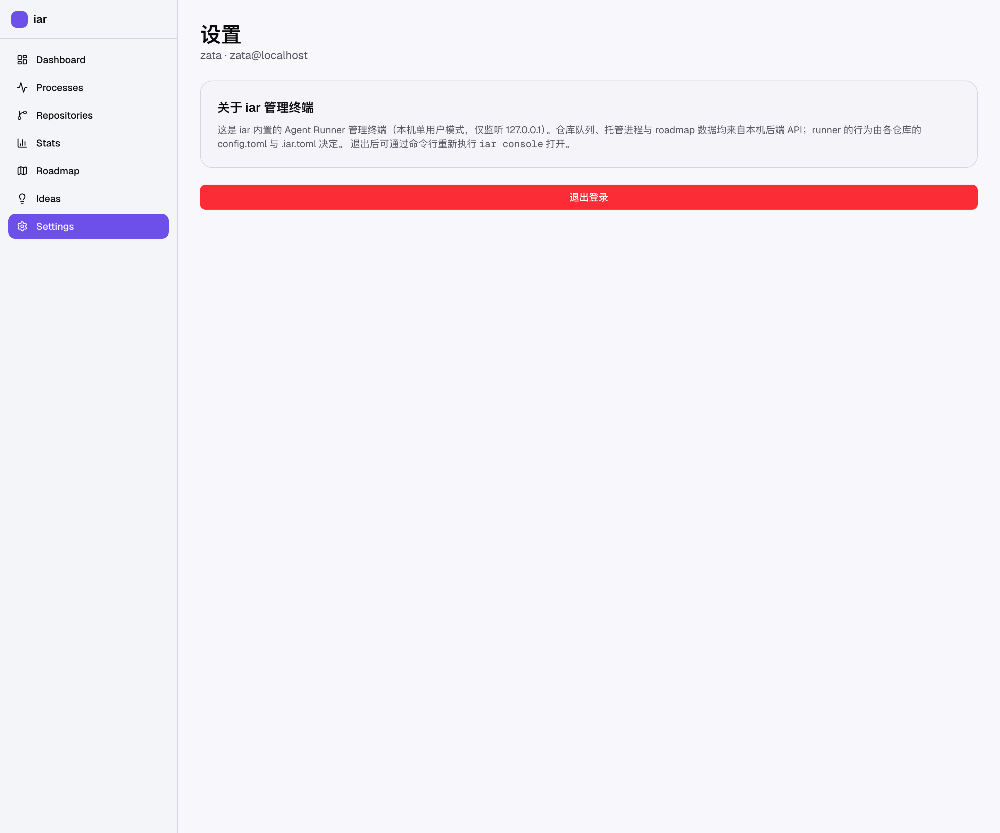
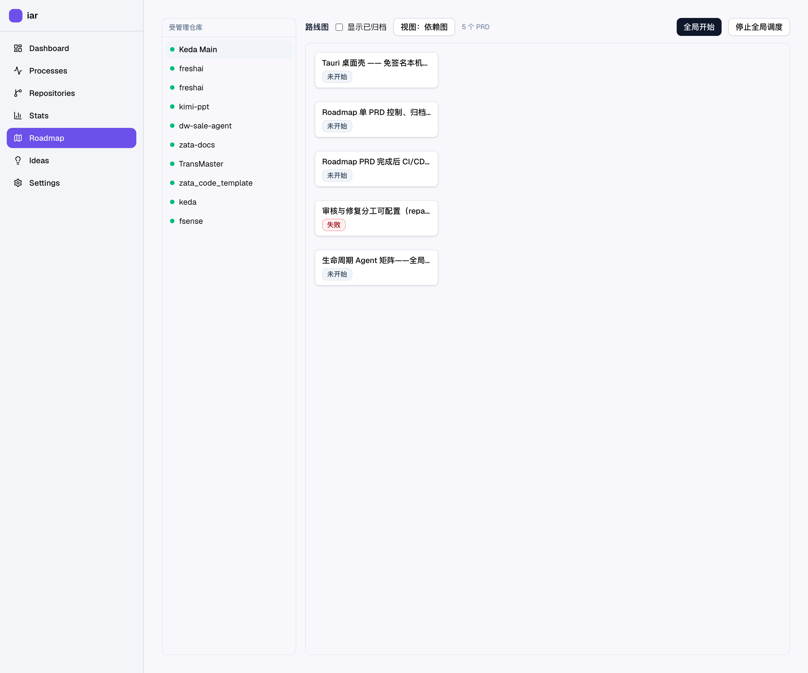
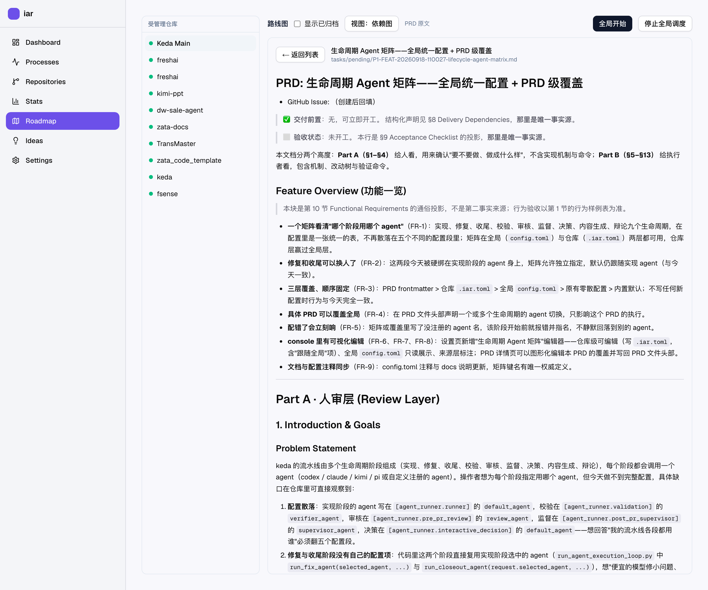

底图为真实 frontend-public 截图；紫色描边区域是原型界面。生命周期矩阵、模型预设与执行器回退集中在同一设置页；Backlog 与 PRD 保留各自快捷入口。

auto
config.toml
label
label_color
label_description
工作流标签（agent/ready、agent/running、validation/pending 等）来自 [agent_runner.labels]，不在本表范围内。
agent/ready
agent/running
validation/pending
[agent_runner.labels]
这是 KedaCode 内置的 Agent Runner 管理终端（本机单用户模式，仅监听 127.0.0.1）。仓库队列、托管进程与 Backlog 数据均来自本机后端 API；runner 的行为由各仓库的 config.toml 与 .kedacode.toml 决定。退出后可通过命令行重新执行 kc console 打开。
kc console
全局设置供所有仓库继承。仓库层可逐阶段覆盖，未覆盖的行继续使用全局设置；每行同时显示绑定与预设的来源。
预设集中定义 Agent、模型 ID 和推理深度；Agent 不支持推理深度参数时，该字段不能生效。
同一执行器可以出现多次，每一行都是独立候选，可绑定不同的全局模型预设；相同的「执行器 + 预设」组合不能重复。回退配置固定写入全局 config.toml；修改预设请先切回全局范围并点“保存当前作用域”，再到这里绑定。

